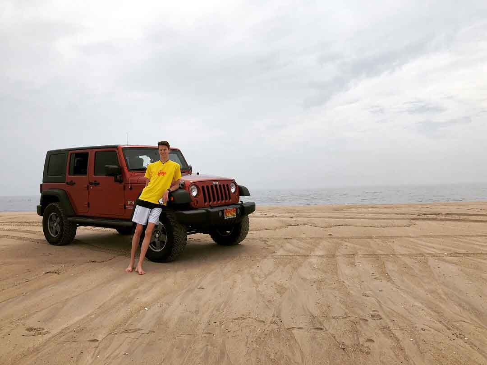

I think I am kind-of cool.
Noah Jaccard is a computer science graduate from the University of Miami who also studied Maths. With his background in Math he is able to understand algotrithms better for his focus, IT, and through his background in business, he is capable of noticing succesful ideas in the computer science field. He was a brother of Lambda Chi Alpha and Alpha Kappa Psi Business Fraternity back in college. In AKPsi (Alpha Kappa Psi) he developes his leadership skills and all the business skills he might have missed out from not being apart of the Miami Herbert Business School. He has a passion for coffee and all things coffee related. He became the Front of House Manager for Brewbike, A coffee stand/bike company that went under right after he graduated back in 2022. Other things Noah is passionate about are American Sign Langauge, creative computer projects, swimming, developing friendships, sewing, running, and take life a day at a time. Noah now works as a User Support Specialist at OTJ Architects in the heart of our nation, Washington, D.C. Noah also has an intense love for Apple products and tries to save up each and every two years to buy all the new and cool releases Apple announces to the world.
I think I am kind-of cool.